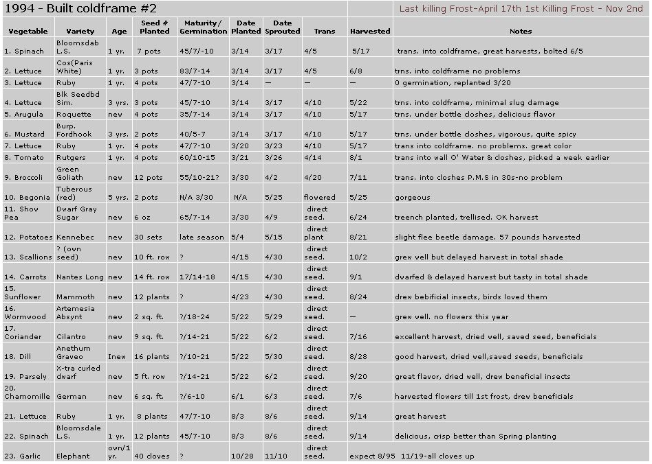

GARDEN AND YARD
The gardening notebook's service as a growing tool ranks right up there with the spade and trowel. A single sheet of paper is all that many gardeners need to record the valuable information of an entire growing season. Was it the Black Seeded Simpson or Grand Rapids lettuce that germinated poorly last year? The tomatoes were transplanted too early and were damaged by cold, but were they set out the second week of April or the third week? The answer to those questions and many others are only a glance away when you use an organized gardening notebook as a tool.
I designed my first gardening notebook nearly 15 years ago, and though the categories of information have changed through the years, it's always been kept as a single page, easily read chart. On occasion I've been tempted to make it more complicated, but found that keeping up with pages of entries made the whole process a chore. Entering information must be easy and retrieval even easier.
I reserve the top of each chart for information of a seasonal nature. The year appears large and bold so the eye keys to it immediately. I also include the dates of the last and first killing frosts in my garden. Those dates prove particularly important to people who garden in cooler valleys, warmer slopes, and other areas where frost dates veer from the norm of surrounding areas. For example, in an area where the USDA has determined the first frost date as September 28th, people gardening on south-facing slopes may find the frost occurs consistently as early as September 19th. Therefore, recording the last frost and first frost dates at your location significantly increases the chances of gardening success.
The gardening notebook chart begins with the left-hand column, "Vegetables." In this column I list the plants that went into the garden that year including vegetables, herbs, and ornamentals. To find how long ago a perennial herb such as oregano was planted I simply scan this column on the charts from previous years.
The "Variety" column names the variety of each plant listed. This column is a must have when you grow more than one variety, of a plant. For instance, plants such as COI -11 and marigolds contain far too many cultivars to remember which one was planted with great success six or eight years ago.
Another bit of information that may he included in the variety listing is the company from where the seeds, corms, tubers, or plants were purchased. That would eliminate all guesswork when trying to remember the source of a particular seed or plant variety purchased years ago.
The "Seed Age" listing uses little space but provides plenty of insight into the vitality of the seeds planted. On the one hand, if t germination is poor the gardener looks at the chart and easily determines if the seed, are too old to sprout. On the other hand, the gardener may quickly decide that age is not a consideration if the seeds are relatively new. You can then contemplate other factors such as improper storage overwatering to explain poor germination.
Knowing how many plants of a particular crop were grown during previous years often proves quite valuable, especially for the home gardener with limited growing area. We grew too many spinach plants last year, but how many were there?
Likewise, maybe there was enough room for a few more broccoli plants but it's difficult to remember if we grew 10 or 12 plants. The "# Planted" column eliminates this guesswork.
The number of days to maturity and days to germination usually appear on seed packets, and you can use that useful information on the gardening notebook chart under the heading "Maturity/ Germination." Knowing the number of days to maturity for each vegetable is vital to successful garden planning. A Northern gardener, for example, knows not to purchase seeds of a melon variety that matures in 120 days because the Northern growing season will end before the melons ripen. Also, if a grower knows that a spinach variety matures in 42 days, he or she has a pretty good idea when the spinach will be harvested and when that plot will become available for planting a second crop.
The days to germination entered on the chart often puts my mind to rest when dealing with difficult-to-germinate seeds. If I plant parsley seeds and two weeks later they haven't sprouted, I don't panic. I look in my gardening notebook and see they need 18-24 days to germinate. On the other side, let's say I planted lettuce seeds a week ago and they haven't sprouted. The info in my gardening notebook indicates they should have germinated four days ago. Obviously, there's a problem and I replant that variety.
The "Date Planted" column is for recording the date that seeds of each plant variety are sown, whether indoors or outdoors. These dates aid in garden planning by providing an exact point in time that can later be referenced and future planting dates tailored to. An obvious application to such a reference concerns growing tomatoes. Most gardeners want ripe tomatoes as early as possible, earlier than the year before. Want to plant tomato seeds a week earlier than last year? Simply check your gardening notebook for the exact planting date last year and plant accordingly.
I like to chart when a seed sprouts because knowing that date generally sets the date for transplanting the seedling outdoors. Then I can make plans to set the seedlings out at the best time to avoid the initial, most damaging wave of a specific insect pest.
If the initial emergence of leafminers in my area is May 10th, I try to transplant spinach seedlings as early as possible in April. That gives them time to establish themselves well enough to sustain leafminer damage from the first hatching.
The "Date Sprouted" information also serves as a cross-check when seed viability is in question. New lettuce seeds that sprouted in three days last year should germinate in three or four days this year, too. The warning flag goes up if those seeds show no sign of life after five days, especially if the date in "Date Sprouted" indicates trouble.
The "Trans." or transplanted column ties in nicely with info from several of the other headings. Entering transplanting dates gives a reference point for getting those tomatoes into the ground two weeks sooner than last year. If the cold gets them, maybe they'll be transplanted only a week earlier the following year.
The transplanting dates also relate to the sprouting dates. Did transplanting those spinach seedlings early to miss the leafminer emergence work? The transplanting date can be adjusted to better address the pest problem or left alone if all went smoothly. Either way, results-oriented planning becomes possible when a gardening notebook is kept.
I always receive a feeling of satisfaction when entering a date in the harvest column. That final entry completes an informative profile of each plant variety I grew that year. The profile becomes a gardening archive that can be referred to during the next few years or decades from now. It shows how near to or far from the stated maturity date the actual harvest was gathered. Add the "days to maturity" printed on the seed packet to the date a variety was transplanted and compare this projected date to the actual date the plants were harvested. Sometimes the two dates jibe nicely. When they don't, we have all winter to figure out what delayed the harvest.
The remainder of the chart is dedicated to "Notes." All types of pertinent information should be entered here, limited only by the amount of space given. Damage from insects, control measures taken, harvest weights, early flowering, watering schedules, and comments on flavor are just a sampling of the types of information that may be entered in the notes section.
CHART DESIGN JAMIE LEO
|
 |
|
|